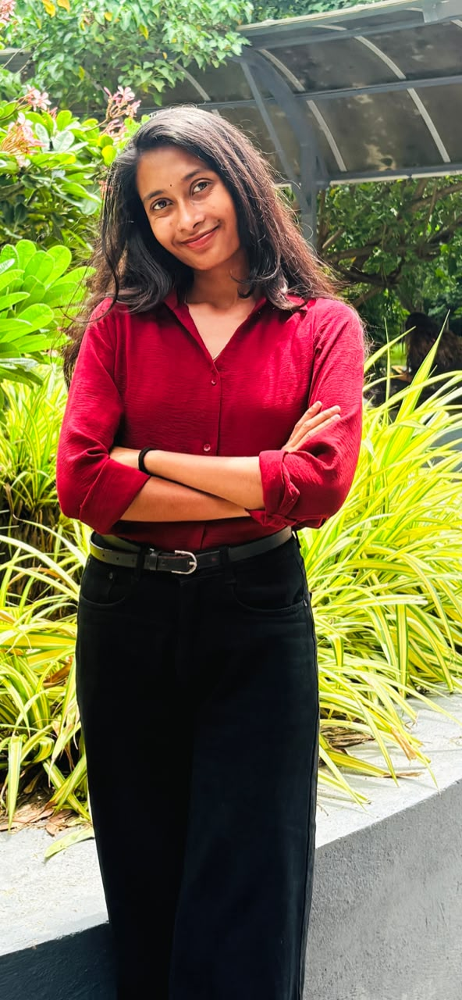

B.E. Computer Science & Engineering · Batch of 2026
Kambhampati
Sowmya Sri
I’m an ambitious and detail-oriented Computer Science Engineering graduate (B.E.) with a strong foundation in Full Stack Development, Data Structures & Algorithms, Machine Learning, and Artificial Intelligence. I’ve built web applications and predictive models through academic and independent projects, and I’m adept in Java, C++, SQL, and front-end technologies. My project experience includes machine learning, predictive modeling, and EEG signal analysis, and I’m interested in AI areas such as Natural Language Processing and Generative AI. I’m passionate about designing efficient, scalable, user-centric software solutions, committed to continuous learning, and currently open to new job opportunities where I can contribute in a collaborative, agile environment.
🧠
Credit Card Default Prediction
Prepared data through preprocessing, feature engineering, and exploratory analysis; compared Logistic Regression, Random Forest, and SVM models, achieving 85% accuracy.
Tools: Python, scikit-learn, pandas, NumPy, matplotlib, seaborn
〰️
EEG Emotion Recognition for Parkinson’s Research
Explores deep-learning-based emotion classification from EEG signals associated with Parkinson’s disease, including analysis of Delta, Theta, Alpha, and Beta frequency bands. Educational research project, not a clinical diagnostic tool.
Tools: Python, TensorFlow, Keras, pandas, NumPy, scikit-learn
View project on GitHub ↗
📚
E-Learning Management System
A learning platform with student, instructor, and administrator roles, supporting courses, assignments, quizzes, and progress tracking.
Tools: HTML, CSS, JavaScript, MySQL, Git
⚓
Marine Reservation System
A Java reservation application for booking and cancellations, with administrative management features.
Tools: Core Java, OOP, File I/O